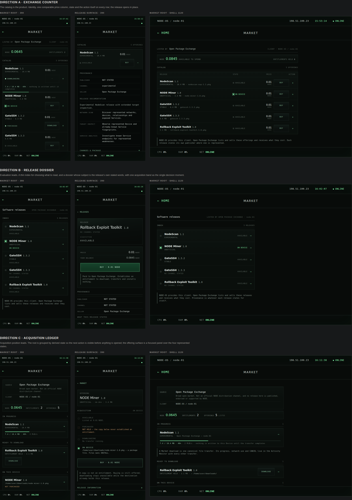
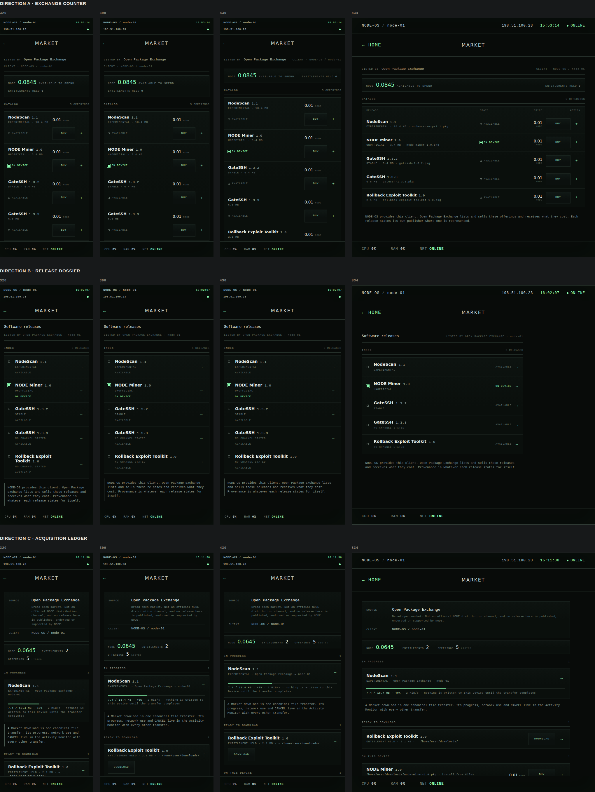

- Direction A — Exchange CounterThe catalog is the product. Identity, one comparable price column, acquisition state and the primary action on every row; the release opens in place, so nothing costs a navigation step.
- Direction B — Release DossierEvaluation leads. A thin index for choosing what to read, and a dossier whose dominant subject is the release's own stated words, with one acquisition band as the single decision moment.
- Direction C — Acquisition LedgerAcquisition position leads. The root is grouped by derived state so the next possible action is visible before anything is opened; the offering surface is a focused panel over the four represented states.
A / B / C comparison board
Each direction's own Market root at the primary phone review width, its release surface at the same width, and its root in the desktop Shell.

Width plausibility
Every direction's Market root at 320, 390, 430 and 834 CSS px, rendered by the direction pages themselves.
